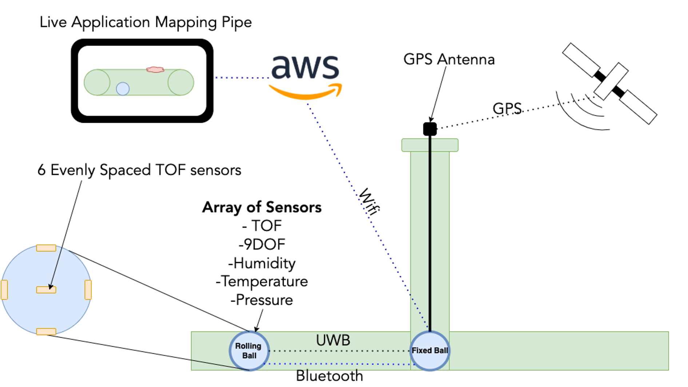
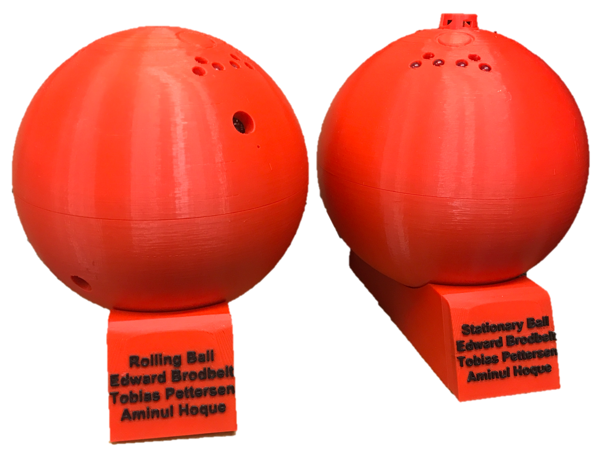

Digital Twins for Underground Infrastructure Inspection
|
Name: |
Language/Tools Used |
Timeframe |
|
Digital Twins for |
ESP32, UWB, MQTT, AWS, Bluetooth |
October 2021 - May 2022 (8 Months) |
A Group project to develop a robot to map pipes from the inside out. Where my focus has been on 3D printed enclosure, the majority of the hardware and WIFI transmission of the data to AWS(Amazon Web Services.
Overview of the System:
The above diagram shows an overview of how the system works. There are two balls in the system, the "Stationary Ball" (or "Fixed Ball") and the "Rolling Ball". The Rolling Ball has six evenly spaced Time of Flight Sensors. This combined with the 9DOF (9 Degrees of Freedom ie Gyroscope). Allows the ball the map the inside of the pipe. This data is then combined with the UWB Distance (ie the Distance between the two balls), through a SLAM (Simultaneous Localisation and Mapping) Algorithm. This produces (x,y,z) points that are on the inside of the pipe. These points are transmitted to the Fixed Ball via bluetooth and then to AWS over Wifi (MQTT, an IOT Protocol). The data is then processed through a number of AWS services and displayed in a live web mapping application.
The above image shows the final two balls, on their wireless charging stands.
The focus of this project was the exploration of wireless communication methods and the idea of live mapping within pipe networks. This prototype we feel is a great proof of concept and shows that wireless pipe mapping could be a real world possibility in the future!
My Work within the Project:
- 3D Printed Enclosure - Designed in Fusion 360 from Scratch, with multiple threaded parts and tight fitted tolerances. Then printed on my Personal 3D printer
- Hardware Choices - Wrote BOM (Bill of Materials) and chose much of the Hardware: ESP32, Batteries, UWB Modules, GPS Modules, LEDS, Switches and Wireless Chargers
- PCB Design - Designed Custom PCB in Autodesk EAGLE, to combine all components together. Chose to reuses prototype boards to keep final costs down
- PCB Assembly - Soldered all components onto custom PCB, down to 0603 components by hand. Along with smaller components under a microscope such as micro USB connector pins
- Arduino Programming - Programmed ESP32 in both balls with code to retrieve UWB and GPS values. Then also MQTT Wifi Transmission to AWS
- Group Management - Group representative, hence point of contact for group and also organised meetings, setup meeting minutes rota, organised meetings for group and made sure project was on schedule.
Project Presentations:
During the course of this project I had two opportunties to present my work. One at a symposium even about 6 weeks before the final deadline and one at the very end of the project: